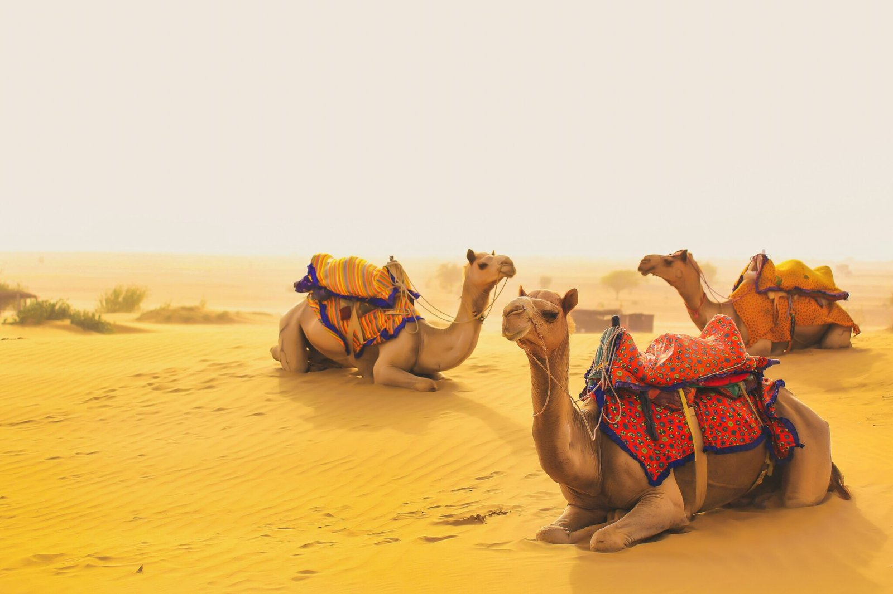
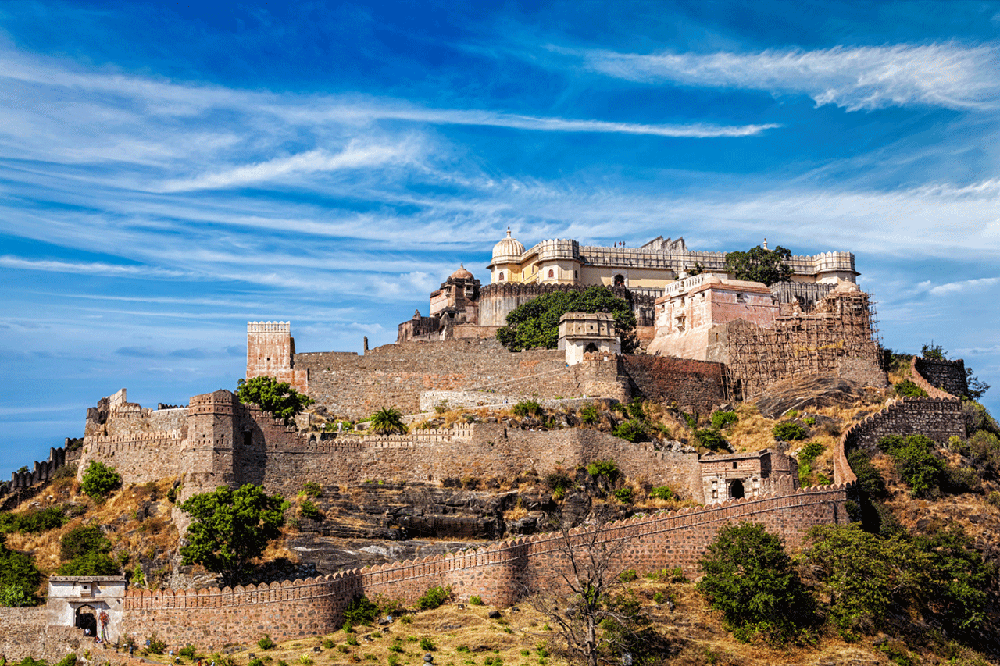
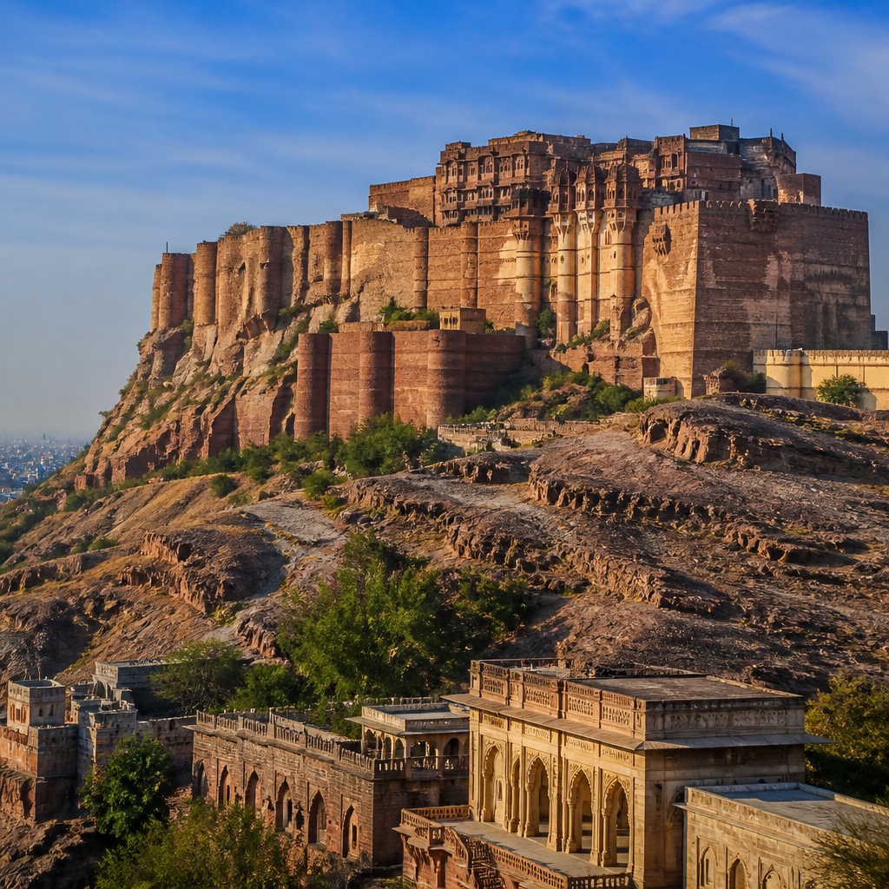
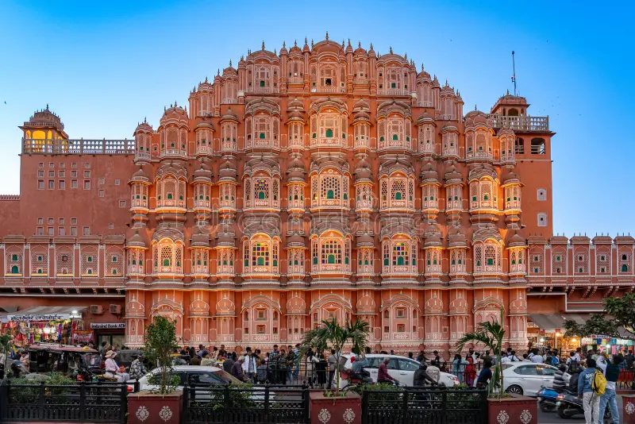

The Rajasthan Tourism
The Rajasthan Tourism
✦✦✦ PADHARO MHARE DESH ✦✦✦

- ✤ - ✤ - ✤ -
Location: Rajsamand District, Rajasthan
Built By: Maharana Kumbha in the 15th Century (1458)
Height: 1,100 Meter Above Sea Level
Historical Importance: The great warrior Maharana Pratap was born in this fort in 1540. This fort is now a UNESCO World Heritage Site and a major tourist attraction of Rajasthan.

Location:Jodhpur, Rajasthan
Built By:Rao JOdh in the 15th Century (1459)
Height:125 Meter Above Sea Level
Historical Importance:This fort was built by Rao Jodh, the founder of Jodhpur. Form this fort, the whole Blue City of Johpur is visible.

Location:Jaipur, Rajasthan
Built By:Maharaja Sawai Jai Singh II
Height:431 Meter Above SEA Level
Historical Importance:This fort was built by Rao Jodh, the founder of Jodhpur. Form this fort, the whole Blue City of Johpur is visible.
